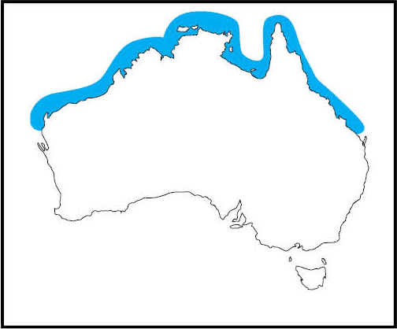
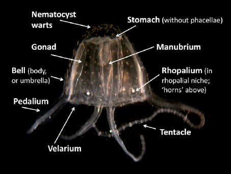
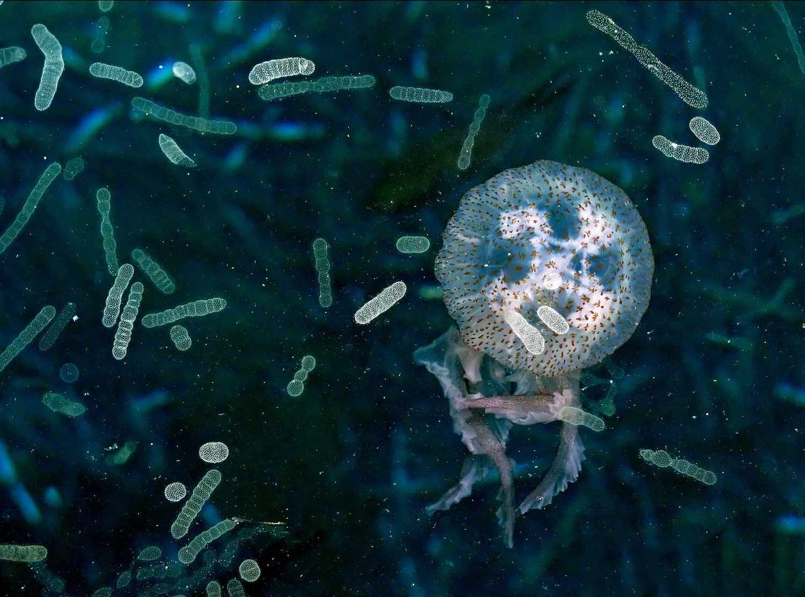

The Irukandji live in the northern waters of Australia, about 5-40m deep. More specifically, from Western Australia to Queensland. They are starting to spread south. In rare cases, they may be sighted near Sydney and Melbourne. Due to winds and currents, they get swept to the shores. This phenomenon is more frequent in the summer.
Their name originates from the Irukandji tribe, who had a deep understanding of the ocean and its dangers. The scientific name barnesi originates from Dr. Jack Barnes, who discovered this species. They are minuscule, as their bells range from 5-25mm in width. They have four tentacles, which are 5-50cm in length. Due to its small size, it is nearly invisible and has a pale white hue. They have stingers on their tentacles and crown. The nematocysts (stinging cells) are in clumps. They can be fired at objects. Some are able to live for five years.
Food of the Irukandji:
The Irukandji can eat 10x their body weight in one day. Their prey is weakened by their potent venom and broken down further by digestive enzymes.
The few animals strong enough to eat them are:
The Irukandji sting is so powerful that humans may die from it. On average, 50-100 people get sent to a hospital because they were stung by one. Symptoms include:
The symptoms above typically arrive 30 minutes after being stung. Antihistamines, antihypertensives, morphine, fentanyl and magnesium sulphate are used to help heal stings.
Back To Top